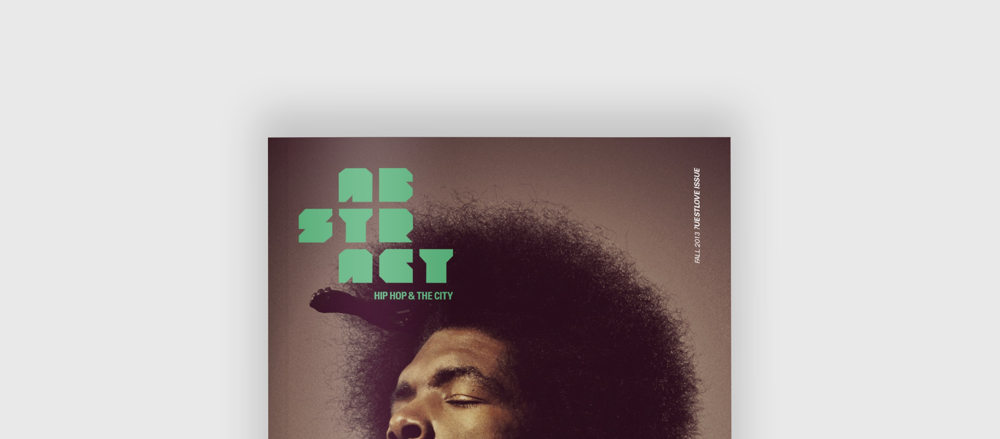
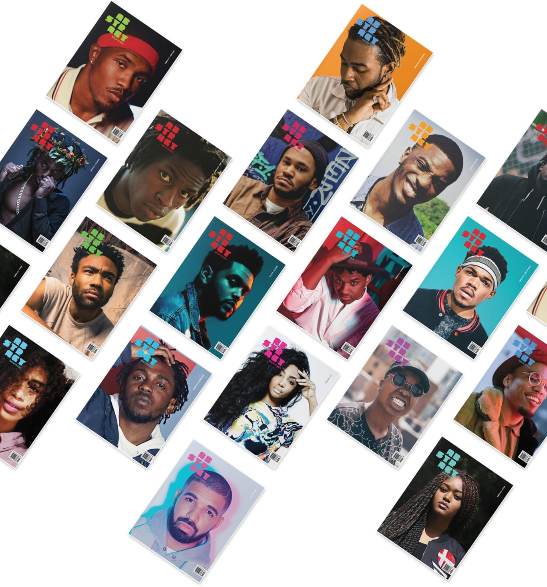

Branding & Editorial
Abstract Magazine: Wake up the North

Abstract Magazine is a concept print and web publication that showcases
local artists, photographers and writers that use their talent to address
socio-political issues. The editorial is meant to empower and keep
mature readers (post-secondary education, young adults) informed of the urban landscape.

Defining the brand
I analyzed competitors in print and web (including Pound Magazine,
Manifesto, Respect, Rap Season, The Fader and Complex) to help me
think about how I wanted the brand to connect with readers.
Abstract’s personality should come from thought-provoking content
and bold visuals. The publication is meant to educate readers in a
way that explores their own thoughts and ideas, help them understand
what is happening in their community and how they can take action to help.
The brand is in the integrity of the content.
Several iterations of Abstract's logo
Creating the logo
Abstract’s competitors use variations of boxed logos and
bold, uppercase logotypes, many of which are black and red. While it
shows strength in structure and colour, I wanted Abstract to
stand out by introducing a logo that shows flexibility in personality.
The urban arts is abstract: it’s a free form that allows a person to
define themselves in their own way with purpose, through every beat,
word and movement.
The editorial experience in a digital space
Translating a print editorial into a digital space made me more aware
of how users interact with publications on the internet. Users are
less inclined to subscribe or go out of their way to visit a blog
because social media outlets like Twitter, Reddit and Facebook make
it easier for them to access and digest content, whether it’s a post
from a friend or suggested/advertised posts.
Interviews and personas
I spoke with some friends (and potential target users) of Abstract.
Knowing that they interact with my competitors’ content on a regular
basis, I asked questions about how they discover new music and news,
how they keep up with trends in music, fashion and lifestyle and what
they liked and didn’t like about the current reading experience of
competitor websites.
- Manny, 24, hip hop enthusiast and photographer
for a streetwear boutique; goes out of his way to look for
streetwear/music news on specific blogs; heavily invested in
thought-provoking articles and well-designed brands; does not
engage in social media but will click into the odd Facebook link
that his friends post
- Matt, 25, music and streetwear enthusiast,
frequented Hypemachine until Spotify automated the process with
playlists; frequently sends music links and articles to friends
via direct messages
- Kris, 32, hip hop purist; only interested in
music updates from older hip hop artists; finds music content on
Spotify and social media (Twitter/Reddit); doesn’t share content
often but likes content and comments on social media
- Tahir, 24, aspiring rapper; usually finds new music via Soundcloud;
heavy social media browser; doesn’t care to share content via social media
- Allan, 35, active Toronto DJ and radio personality; unconcerned
by the artist gossip, more concerned with the music; likes to see
and keep track of new talent; will share content if it’s relevant
to his peers
I found that all personas discover most of their music/lifestyle
news via social media and don’t actively keep an eye on specific blogs.
When they do read an article, they tend to explore other parts of
the website once they finish reading, mostly because of related articles.
Music platforms like Spotify make it easier for them to find music
(Discovery Weekly, related artists, Release Radar), instead of digging
for music that’s buried in artist news on blogs.
Mapping out how some of my interviewees interact with competitor blogs
Discovering pain points
With the help of some friends, I mapped out how readers currently
interacts with some of the competitor blogs to define any pain points
a reader might have from the time that they click on a link on
social media, to the time they leave the website.
Most of the pain points are found when the reader is interacting
with an article (“why do they insist of having me subscribe?”
“Where’s the share button?” “Where can I read more?”). Other pain
points are things that speaks more to the integrity of the brand
(“Is this clickbait?” “Is this a trusted source?”).
User Journey takeaways
Subscribing should be inviting, not intrusive.
Readers are more inclined to follow brands on Twitter or Facebook so
that it's integrated into their social media. Instead of having a full-screen
takeover, we can ask our readers to subscribe in a way that's less
intrusive, like asking for an email at the end of an article.
Sharing is caring. Hip hop is built on a community
that thrives on debate and discussion and Abstract should
emphasize that. A comments section after an article would not be
useful for the publication because it often invites unwarranted and
unfiltered banter. Music is subjective and the discussion is not always
inviting with strangers that have strong opinions. Instead, sharing
a link to social media should be readily available and easy to
interact with. The most valuable dialogue for readers are on social
media, with peers that share the same hobbies.
More food for thought. The experience should allow
readers to find new content after they finish reading an article so
that readers may stay longer and read more articles.
Wireframes
As I began to wireframe the digital experience, there were a few
things I wanted to keep in mind after discussing with target users
what worked and didn’t work with their favourite blogs and my own
list of inspiration:
- Keep a minimal aesthetic with bold imagery; word-heavy where it matters
- Readable content and keeping in mind contrast in type size,
weight, spacing, fonts and colour for both desktop and mobile
Approached the organization of articles by panel,
leading with Featured Articles, Music Discovery, then Latest News so
the reader can continue to load more news if they are interested.
There are three things a reader is likely to be looking for on the
home page: latest news, new music, and featured articles. I surfaced
the featured articles first because these are the thought-provoking
articles that speak most to the brand. Having the Latest News section
at the end of the home page in a list makes it easier for people to
scan news that might be relevant to them.
Takeaway
This project helped me discover that content drives the success of
a publication. Brands speak to their target audience through their
language on social media and their articles. Readers don’t frequent
specific websites when looking for news, but instead look to social
media outlets like Facebook and Twitter. In the future, I’d like to
explore more ways that I could help users share content faster and
easier.